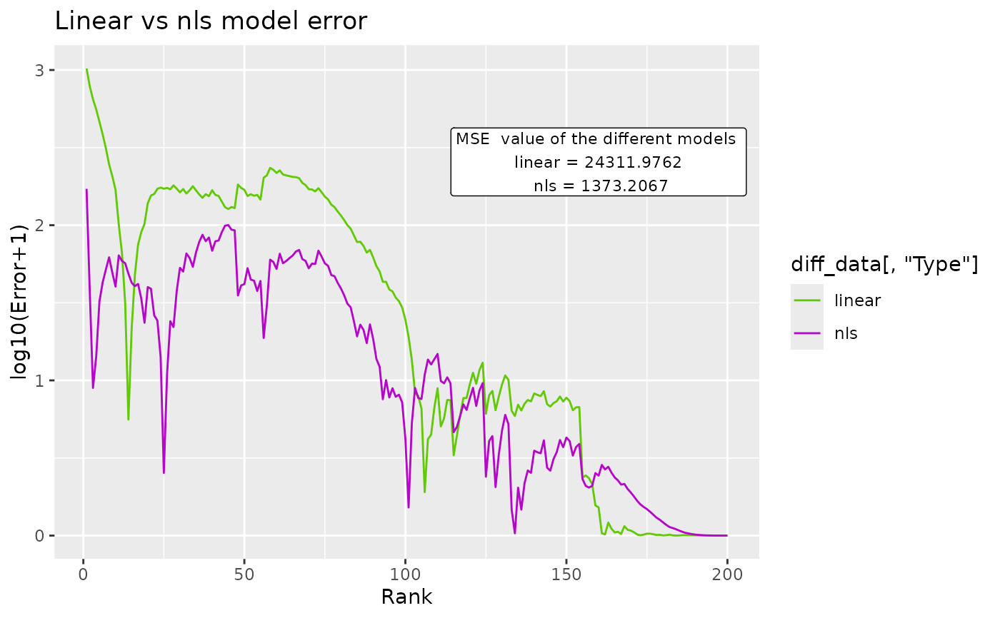
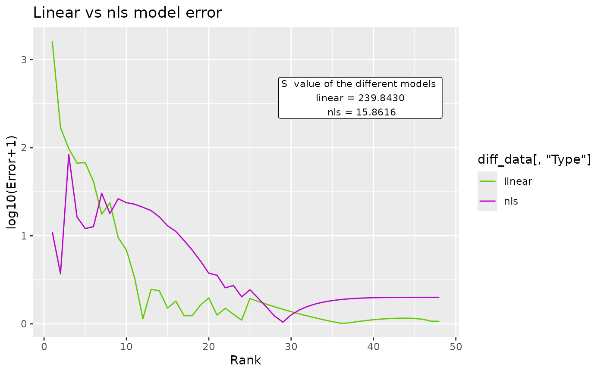

Creates a graph that illustrates error in the predictions of the linear and nls models for quick comparison. The y axis is the difference between the predicted value and the original abundance value. This value is then made absolute and 1 is added before taking its logarithm. The addition of 1 keeps a difference of 0 as 0 in the plot and prevents a small decimal linear difference from becoming a large difference in the plot. The x axis is the rank for that given error. This allows us to see where in the distribution each model performs better or worse.
Usage
BC_compare(
df_abundance = NULL,
column = NULL,
BC_plot_list = NULL,
c_gfx_title = "Linear vs nls model error",
c_gfx_label = TRUE,
...
)Arguments
- df_abundance
A data frame that contains abundance data.
- column
Either a string with the name of the column or the number of the column that stores the abundances in the data frame.
- BC_plot_list
A list that contains 2 objects previously generated with
BC_plot. The first one must use the linear paramenters and the second one parameters estimated by the nls method.- c_gfx_title
String. Changes the title of the graph.
- c_gfx_label
Logical. Adds a label that adds the model_extra data of both models. Defaults to true.
- ...
passes arguments to
BC_plot.
Value
A list with that includes a graph and a data frame with difference data between predicted and real values per model.
Examples
comparehmp_wgs <- BC_compare(hmp_wgs,2)
comparehmp_wgs[[1]]

head(comparehmp_wgs[[2]])
#> Rank Difference Type
#> 1 189 0.00237922236235437 linear
#> 2 110 0.949411556116291 linear
#> 3 149 0.86398234712333 linear
#> 4 75 2.18408717339127 linear
#> 5 2 2.89460297490384 linear
#> 6 41 2.19496466997654 linear
compareEC_Metabolite <- BC_compare(EC_Metabolite, column = 2,model_extra="S")
compareEC_Metabolite[[1]]

head(compareEC_Metabolite[[2]])
#> Rank Difference Type
#> 1 5 1.82962336337096 linear
#> 2 1 3.20752976731169 linear
#> 3 2 2.22780177932703 linear
#> 4 3 1.98962657772674 linear
#> 5 4 1.82505949219322 linear
#> 6 6 1.61439410525534 linear